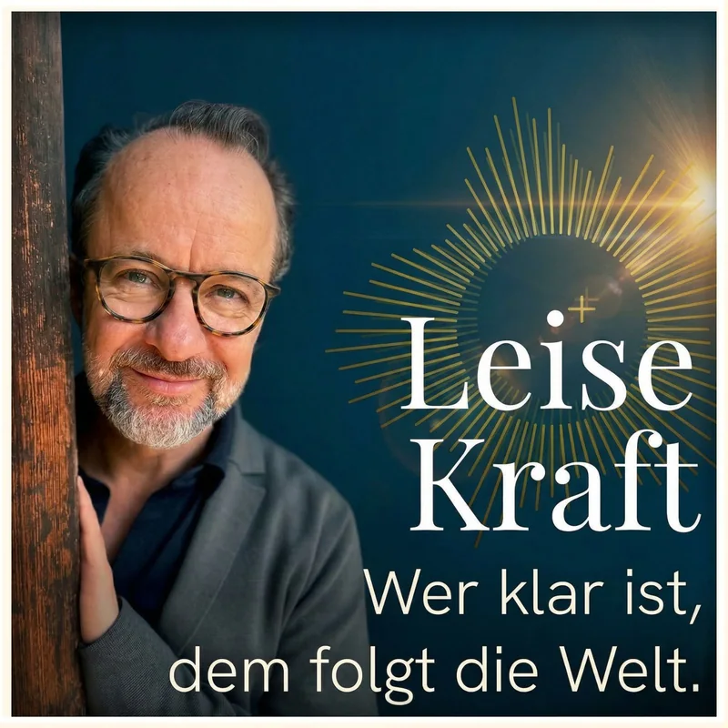

Episode 04
Stille ist keine Schwäche. Sie ist deine wichtigste Führungsressource.
Warum der Dauer-on-Modus Founder in die falsche Richtung treibt – und wie die Zehn-für-zehn-Regel echte Klarheit im Alltag schafft.
Für Menschen in Verantwortung, die fast alles optimiert haben, außer dieser Verbindung.
Du hast gute Zahlen. Ein solides Deck. Calls mit Investoren. Und trotzdem: kein Term Sheet. Dieser Podcast ist für dich — wenn du bereit bist, genau da anzusetzen.
Denn wer klar ist — dem folgt die Welt.
For international clients →Wenn du nicht weißt, wo du anfangen sollst.
Warum der Dauer-on-Modus Founder in die falsche Richtung treibt – und wie die Zehn-für-zehn-Regel echte Klarheit im Alltag schafft.
Warum Rollenunklarheit für 80% der Überforderung verantwortlich ist – und wie Founder mit bewusstem Rollenswitchen Burnout vermeiden und klarer führen.
Warum mehr arbeiten dein Funding kostet und dein Team lähmt. Der Action Bias bei Foundern und die eine Frage, die das Muster aufbricht.
Alle Folgen chronologisch, die neueste zuerst.
Strategie, Funding, Stakeholder-Navigation.
Team, Prozesse, Skalierung.
Kundenarbeit, Lieferung, Problemlösung.
Niemand hat dir beigebracht, wie du zwischen ihnen wechselst — und dabei du selbst bleibst. Genau diese Verbindung ist der Hebel hinter allem anderen.
Der Schwerpunkt: Menschen an kritischen Wendepunkten, in Unternehmen und am Anfang des eigenen Weges.
Weil Investoren, PE-Fonds und strategische Käufer nicht nur dein Business bewerten. Sondern dich.
Ich habe David in prozessorientierten Workshops erlebt. Jedes Mal war ich beeindruckt von der Leichtigkeit, mit der er die Teilnehmenden durch diese Formate geführt hat. Wie ein warmes Messer durch Butter: immer wieder eine zielführende Frage oder inspirierende Geschichte zur Hand. Er macht die Erkundung des Ungewissen zu einem wundervollen Erlebnis.
David ist ein sehr inspirierender Mensch, der durch seine Impulse und auch durch sein Auftreten einen tiefen Eindruck hinterlässt. Ich mag seine Art wahnsinnig gerne und kann ihn absolut empfehlen.
David hat auch remote eine bemerkenswerte kompetente und beruhigende Ausstrahlung.
Die Folgen mit den tiefsten Insights — als ausführliche Show Notes zum Nachlesen.

Warum mehr arbeiten dein Funding kostet und dein Team lähmt — und die eine Frage, die das Muster aufbricht.
Burggraben, Unit Economics, Cash-Logik — und warum Antworten verkörpert sein müssen, nicht nur gewusst.
Warum Erklären in entscheidenden Momenten Distanz schafft — und wie Vision Resonance entsteht, wenn Strategie allein aufhört zu wirken.
Corporate programmes, Threshold and one-to-one work all run in English. The Threshold Program has an English page. Founder work lives at light-creators.com.
Wer klar ist, dem folgt die Welt.